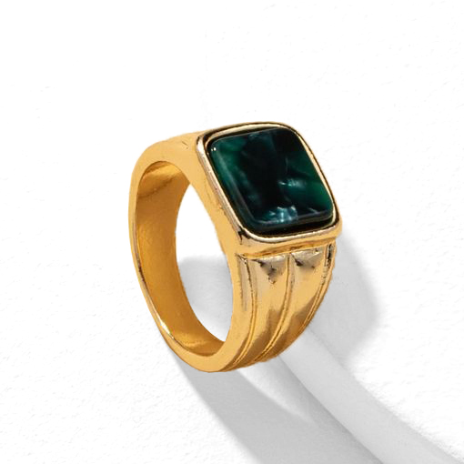
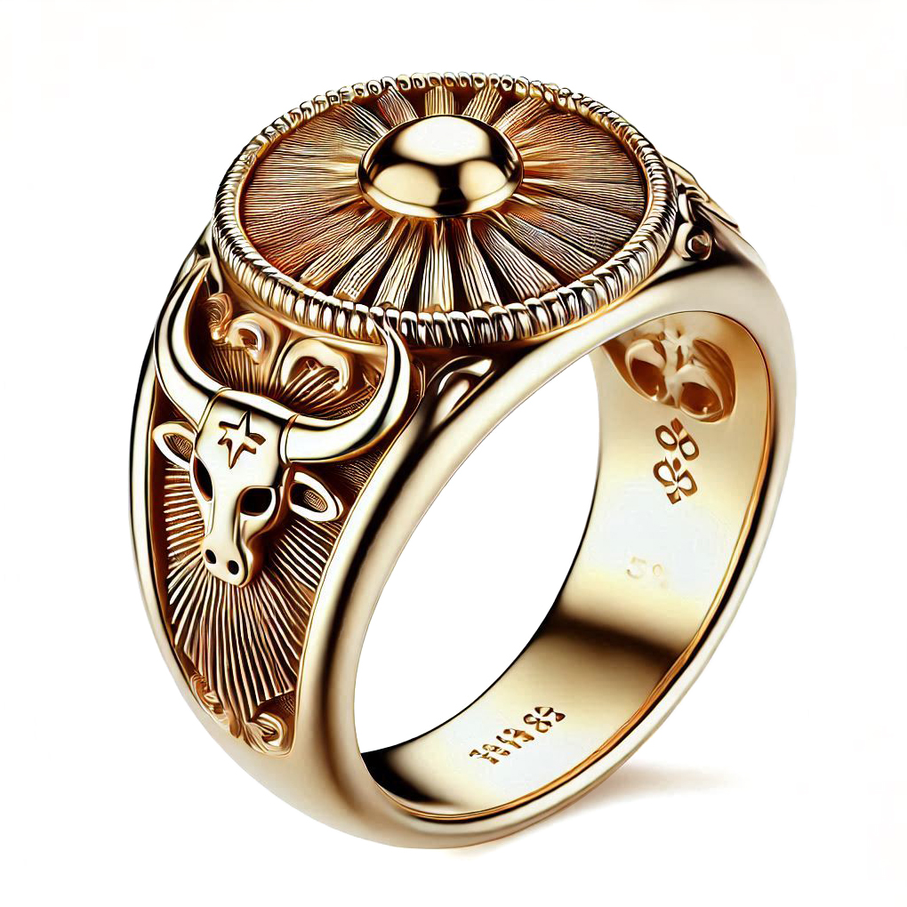
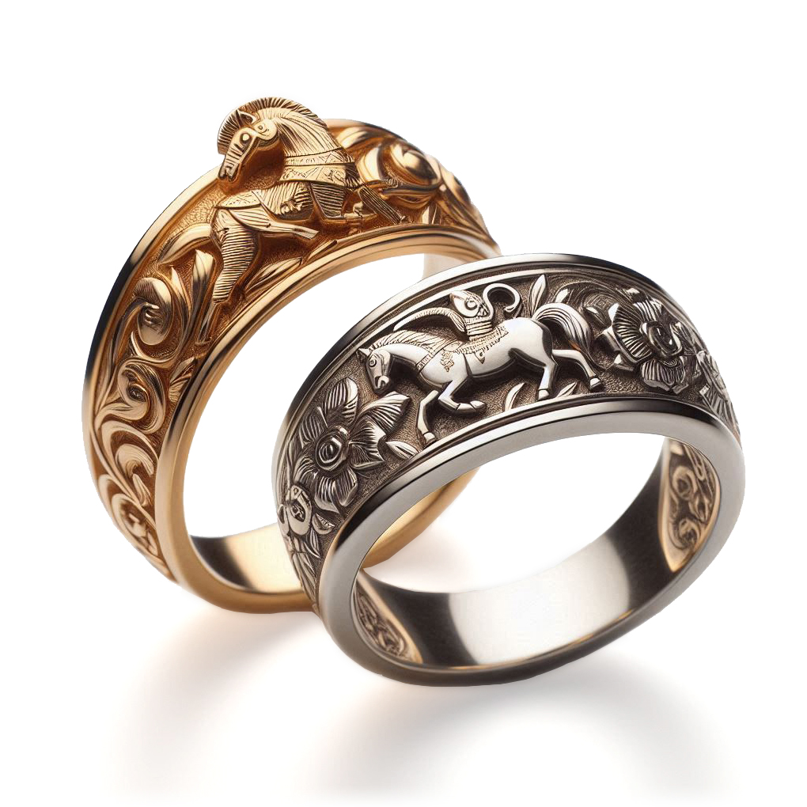
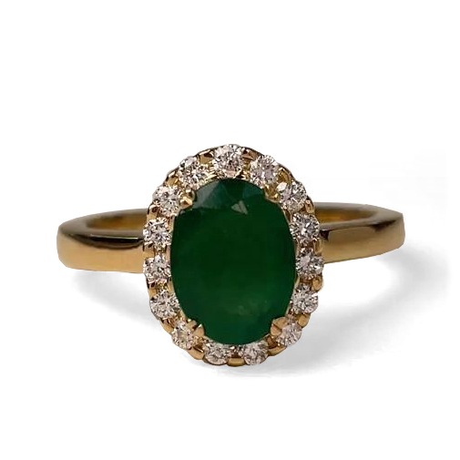

Esplendor en cada detalle
Nuestra colección de anillos fusiona la tradición artesanal con el brillo eterno de las esmeraldas. Cada pieza es una promesa de elegancia y un tributo a la belleza natural de Colombia.
Descubre diseños que capturan la esencia del lujo contemporáneo, creados para ser el centro de todas las miradas.




